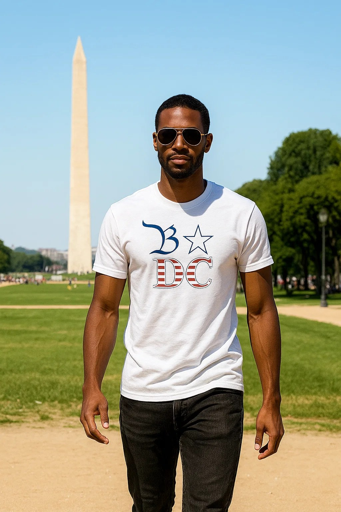
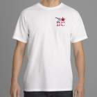
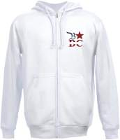
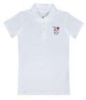
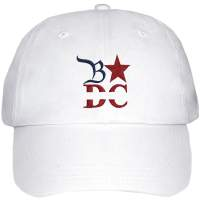
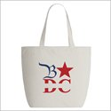
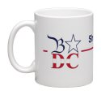

★ Be seen
T-Shirt — White
$30
Did you knowThe DC flag's three stars and two bars are lifted straight from George Washington's family coat of arms.
Notify meWashington, D.C. — since 2010
You can ♥ NY. But everybody wants to Be DC. The city's first logo and motto — one mark, and a star that means whatever you want it to.

The mark
Say the letters out loud — B, D, C — the way you'd say ABC, and it sounds like Be DC. Wearing it is a personal endorsement of the city: pride in it, confidence in it, a clear choice for it.
The letterform is taken from the handwriting of the U.S. Constitution — DC is the seat of government.
Same shape as the stars on the U.S. and DC flags — a placeholder for any word you want to put after "Be."
Set in the government's own typeface, filled with the stripes of both the U.S. flag and the DC flag.
Because Washington, DC is the capital of the United States.
"You can ♥ NY —
but everybody wants to Be DC."
"I moved to Washington, DC from the Netherlands to be with my girlfriend, who's from here. What struck me first was how beautiful and diverse the city is — and right behind it, how few tourists ever stop to enjoy it. Friends visiting from Europe would fly in for a week in New York and only 'drop by' DC to say hello."
— Jaap Dekkinga, founderThe platform
The star stands for whatever message you want to send. Every event, team, and institution in the city can adopt the motto and fill in its own verb — and so does every piece in the shop below.
Did you know
The research that kicked off Be DC in 2010 — and the question it still asks: why does a city with this much going for it have no mark of its own?
visitors a year — yet only 17% came for a plain vacation or getaway. Most came for business or to see family.
in development completed since 2001, with billions more under construction at the time.
jobs added since 2000 — nearly half of them in professional and business services.
of the most resilient regional economies in the country, barely losing jobs through the 2009 recession.
Figures from the original Be DC research (Washington.org visitor statistics, the Greater Washington Initiative, and WDCEP), collected when the project began in 2010.
Shop
A seven-piece starter line, printed to order so nothing sits in a warehouse. Every piece fills in the star with its own Be ___ and carries a fact about the city on the hang-tag.
★ Be seen
Did you knowThe DC flag's three stars and two bars are lifted straight from George Washington's family coat of arms.
Notify me
★ Be everyday
Did you knowWashington, DC belongs to no state — the Constitution set it apart as its own federal district in 1790.
Notify me
★ Be warm
Did you knowAt 555 feet, the Washington Monument was the tallest building in the world when it opened in 1884.
Notify me
★ Be sharp
Did you knowA federal height limit keeps DC's skyline low — the city has no skyscrapers by law.
Notify me
★ Be covered
Did you knowDC's street grid was laid out in 1791 by Pierre Charles L'Enfant, a French-born engineer in the Continental Army.
Notify me
★ Be prepared
Did you knowThe Library of Congress is the largest library on earth, holding more than 170 million items.
Notify me
★ Be awake
Did you knowRock Creek Park, right inside the city, is one of the oldest national parks in the country — established in 1890.
Notify mePrinted and shipped by our production partner as each order comes in — ships in 2–5 business days. Free shipping on orders over $50.
Contact
Questions about an order, a partnership, or the mark itself — reach out.